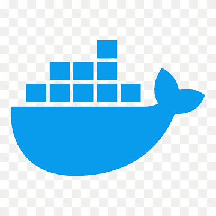

Piotr Zięba
Warsaw, Masovian Voivodeship, Poland
 +48 517 394 324
+48 517 394 324
 piotr_zieba@icloud.com
piotr_zieba@icloud.com
About Me
- Software support engineer, system and application administrator
- Developing towards DevOps
- Proficient in English at C1/C2 level
- Over 10 years of experience in working with individual and business clients, including technical support for North America, Europe, and the Middle East
Technology Stack
 Linux
Linux- Bash scripting
 Mainframe IBM
Mainframe IBM z/OS
z/OS Microsoft Windows
Microsoft Windows- Networking
- OSI model
 TCP/IP
TCP/IP HTML 5
HTML 5 CSS 3
CSS 3 JavaScript
JavaScript TypeScript
TypeScript- SQL
 MongoDB
MongoDB- Confluence
 Jira
Jira Bitbucket
Bitbucket Git
Git GitHub
GitHub- Docker
 Jenkins
Jenkins Grafana
Grafana Kibana
Kibana- YAML
 Visual Studio Code
Visual Studio Code IntelliJ
IntelliJ
Expectations
- Either B2B (preferably) or Employment Contract
- Warsaw location / remote work / hybrid
IT experience
IT Application Administrator
PKO Bank Polski S.A.
November 2023 – present | Warsaw, Poland
- Administrating Alnova banking application that runs on z/OS, Linux and Windows systems
- Monitoring jobs performed on the IBM Mainframe (SDSF, Control-M) and open platforms (AutomateNow)
- Testing applications and software packages
- Handling tickets in HP Service Manager and Jira
- Maintaining IT documentation in Confluence
Junior Software Support Engineer
Sages Sp. z o.o.
October 2022 – June 2023 (9 months) | Warsaw, Poland
- Monitoring production and test environments on Linux servers using Kibana and Grafana
- Supporting internal system users in day-to-day operations - tickets in Jira
- Creating and updating technical documentation in Confluence
- Maintaining systems and managing their configuration in YAML
- Debugging code, collaborating with developers and analytics teams on identified errors
System Administrator, Software Support Engineer, Technical Support
B2B
September 2020 – present (3 years 8 months) | Warsaw, Poland
- Installing and updating operating systems (Windows, Linux)
- Backup and data restoration
- Diagnosing and resolving hardware and software issues
- Configuration and installation of IT devices
- Handling technical support requests from clients or users
Languages
- Polish - Native language
- English - Full proficiency in speaking and writing
- Russian - Basic knowledge of the language, ability to verify documents written in Cyrillic
Education
- Dublin Institute of Technology - Accounting and Finance2011-2012
- Dublin Business School - Accounting and Finance2009-2010
- Warsaw School of Economics - International Relations2003-2005
I hereby give consent for my personal data included in my application to be processed for the purposes of the recruitment process under the European Parliament's and Council of the European Union Regulation on the Protection of Natural Persons as of 27 April 2016, with regard to the processing of personal data and on the free movement of such data, and repealing Directive 95/46/EC (Data Protection Directive).